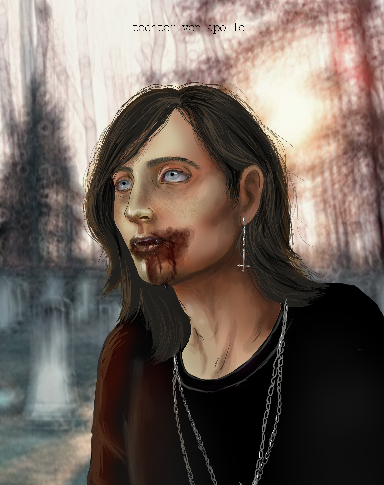
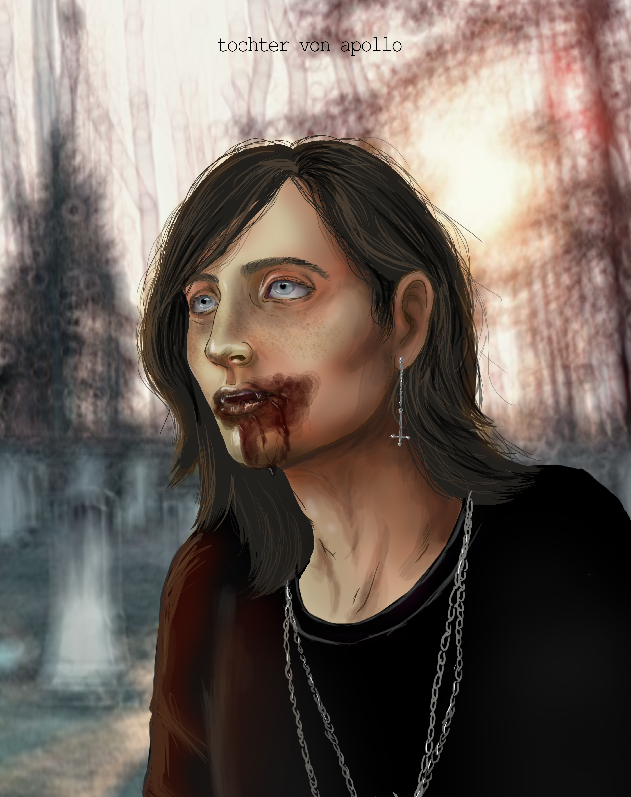

Hagar Ruiz Wolfgang, artísticamente conocida como Tochter von Apollo es una ilustradora alcoyana, conocida por su estética de gótica y sus creencias paganas las cuales muestra abiertamente. Hagar desde pequeña le ha fascinado dibujar y el mundo del arte en general, desde el primer momento ya tenía claro a lo que iba a dedicarse. Hizo el bachiller artístico en Teruel y lo terminó de vuelta a Alcoy en donde, posteriormente, se sacó la carrera de Ilustradora en la Escuela de Arte y Superior de Diseño de Alcoy. Además también es conocida por sus fotografías con temáticas oscuras y/o misteriosas. Utilizando en todas sus obras simbología pagana y animales con significados simbólicos.
 
